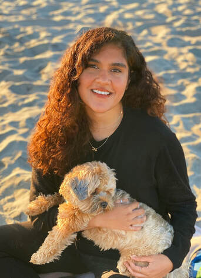

Hi! I'm a third year Ph.D. student at the University of Colorado, Boulder (CU Boulder). I am a graduate researcher working with Dr. Shaun Kane in the Superhuman Computing Lab.
I currently research and develop educational toys to help visually impaired children and members of their support network (family members, friends, educators) learn Braille. My research interests broadly include assistive/accessible technology in education and designing tools to support classroom equity. I am currently the Computer Science representative on the CU Boulder Department of Engineering Graduate Student Advisory Board.
Before CU, I completed my B.S. in Computer Science (with a minor in Psychology) from the University of Oregon in 2018. During this time, I was an undergraduate researcher in the UO Learning Lab and the Human-Computer Interaction Lab. I served as Secretary (2016-2017) and President (2017-2018) of UO Women in Computer Science.